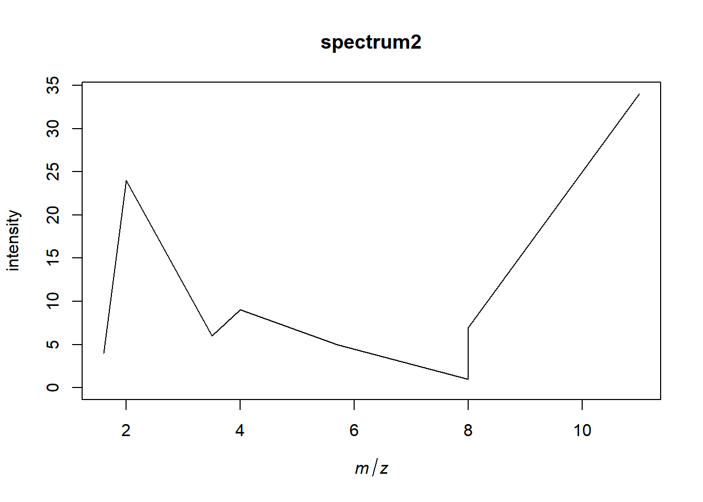
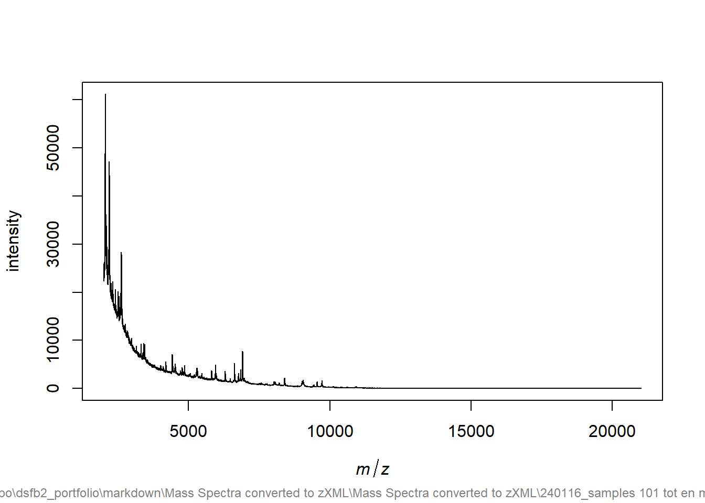
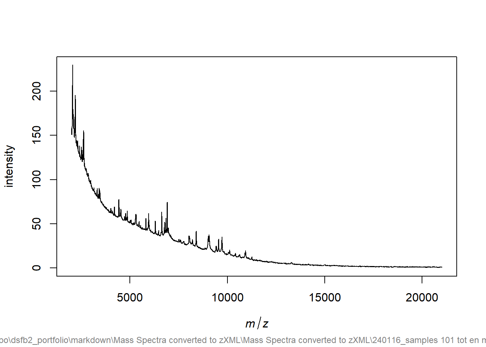
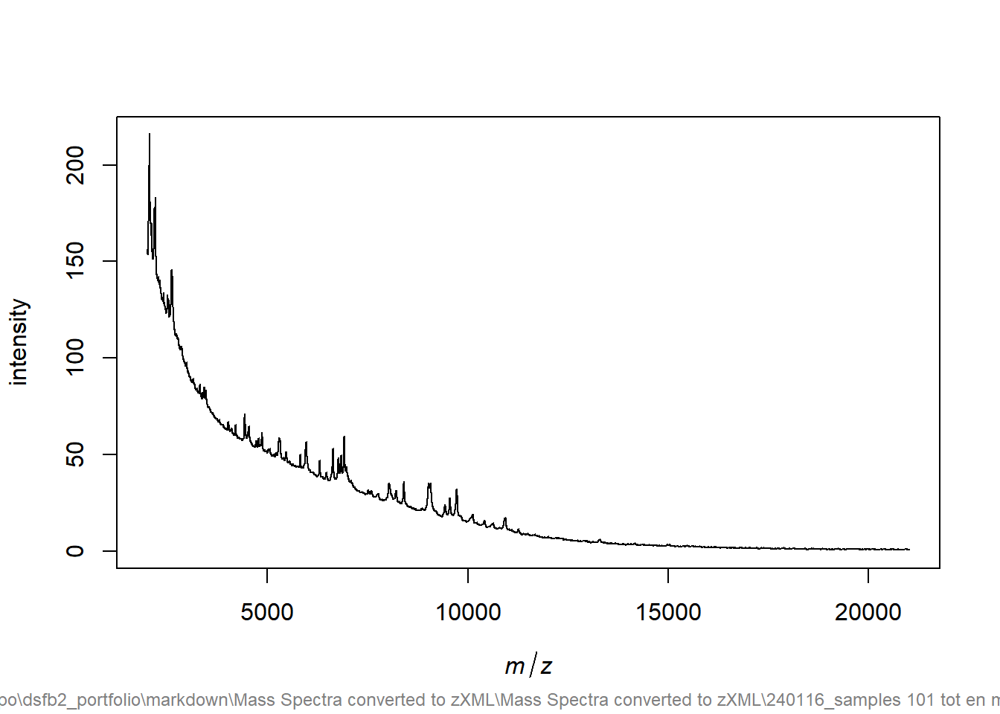
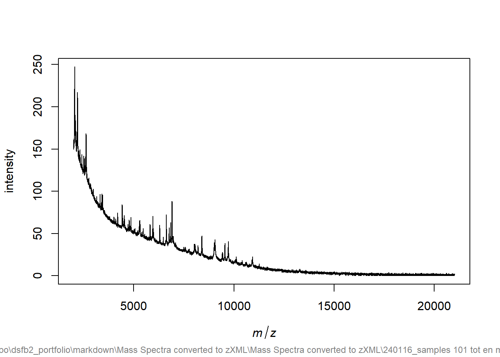
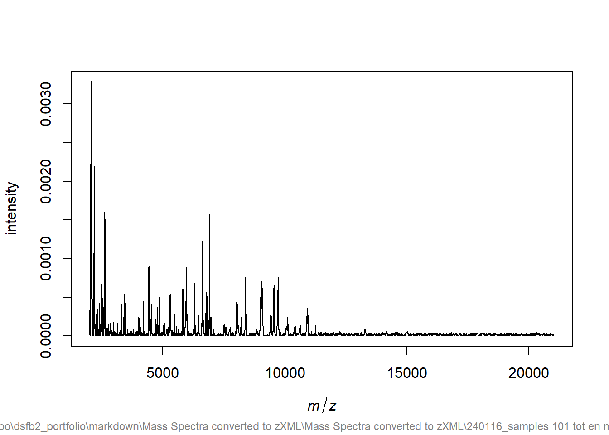

4 Vrije opdracht proteomics
4.1 Omschrijving
proteomics is groot veld met veel analyses die ik nooit heb gedaan, hierom wil ik de analyses en theorie graag leren als vrije opdracht voor dsfb2. De eerste package die ik ga leren om proteomics analyses uit te voeren is MALDIquant. (https://cran.r-project.org/web/packages/MALDIquant/index.html)
Als er meer of betere packages blijken te zijn zal ik deze ook hanteren in een pipeline.
4.2 Planning
- 4 uur, ontdekken van MALDIquant en literatuuronderzoek MALDI en massaspectrofotometrie
- 8 tutorials en theorie bij behorende technieken leren en hanteren
- 8 pipelines maken en optimaliseren
- 4 uur zoeken naar passende datasets
- 8 uur pipeline uit testen op een nieuwe dataset en verbeteren
4.2.1 Bronnen
https://cran.r-project.org/web/packages/MALDIquant/vignettes/MALDIquant-intro.pdf https://cran.r-project.org/web/packages/MALDIquant/MALDIquant.pdf https://strimmerlab.github.io/software/maldiquant/ https://github.com/sgibb/MALDIquantExamples/ https://cran.r-project.org/web/packages/MALDIquant/index.html
4.3 De analyse
Maldiquant bevat bijna alle functionaliteit voor MALDI-TOF en massa spectrometrie, maar voor het importeren van andere data types zoals .mzML moet MALDIquantForeign worden gebruikt.
## S4 class type : MassSpectrum
## Number of m/z values : 10
## Range of m/z values : 1 - 10
## Range of intensity values: 1 - 10
## Memory usage : 1.414 KiB
## Name : Spectrum1## [1] 1 2 3 4 5 6 7 8 9 10## [1] 1 2 3 4 5 6 7 8 9 10## $name
## [1] "Spectrum1"test1<-MALDIquant::createMassSpectrum(mass=c(4,8,2,8,11,1.6,3.5,5.7),intensity=c(9,1,24,7,34,4,6,5),metaData = list(name="spectrum2"))## Warning in validityMethod(as(object, superClass)): Unsorted mass values found.## Warning in .reorder(object): Mass and intensity values are reordered.
# importing data from 'Mass spectra Converted to zXML'
# Importing is done with MALDIquantForeign package not MALDIquant itself
data_101mzML<-MALDIquantForeign::importMzMl("Mass Spectra converted to zXML/Mass Spectra converted to zXML/240116_samples 101 tot en met 110 240116-1238-1011014561/101.mzML")## Reading spectrum from 'C:\Users\Mathijs\Desktop\Github_Repo\dsfb2_portfolio\markdown\Mass Spectra converted to zXML\Mass Spectra converted to zXML\240116_samples 101 tot en met 110 240116-1238-1011014561\101.mzML' ...## Found mzML document (version: 1.1).## Found 1 spectrum.## Processing spectrum 1/1 (id: file=_x0031_01_x002f_0_A1_x002f_1_x002f_1SLin_x002f_fid) ...## Look for '<fileChecksum>' position ...## Calculating sha1-sum for 'C:\Users\Mathijs\Desktop\Github_Repo\dsfb2_portfolio\markdown\Mass Spectra converted to zXML\Mass Spectra converted to zXML\240116_samples 101 tot en met 110 240116-1238-1011014561\101.mzML': 24ece00fd038071c0494b3fd250dc8713100cbad
# https://cran.r-project.org/web/packages/MALDIquant/MALDIquant.pdf
# testing data for MALDIquant is data(fiedler2009subset), data from a 2009 studyIn dit voorbeeld wordt 1 .mzML file geimporteerd, er kunnen ook meerdere orden geimporteerd, list.files() is een optie om meerdere files in een folder te importen als er massa spectra vergeleken moeten worden. bijv. referentie samples en monsters met een ziekte.

# steps of spectrometric analysis, including but not limited to importing, QC and smoothing
# one chunk per step with text inbetween
#install_github("sgibb/MALDIquantExamples")
# Zijn er intensity waardes bij de Massa Spectrofotometrie
any(sapply(data_101mzML,MALDIquant::isEmpty))## [1] FALSE##
## 21331
## 1 Bij het plotten zien we de massa spectrum, we zien een ‘baseline’, dat is de achtergrond waar geen pieken zijn. De baseline wordt later verwijderd, omdat dit een onjuist beeld geeft over de intensiteit van de pieken t.o.v. achtergrond anders.
Bij het plotten zien we de massa spectrum, we zien een ‘baseline’, dat is de achtergrond waar geen pieken zijn. De baseline wordt later verwijderd, omdat dit een onjuist beeld geeft over de intensiteit van de pieken t.o.v. achtergrond anders.


## Warning in .replaceNegativeIntensityValues(object): Negative intensity values are replaced by zeros.
Variance stabilization is de stap waar de Massa spectra wordt getransformeerd met door de wortel of log van de datapunten. De ‘sqrt’ optie werkt, maar alle ‘log’ opties creeëren data die niet werkbaar lijkt. Deze stap maakt de data makkelijker te visualiseren, omdat extreme pieken dichterbij de andere pieken worden gebracht.
# vergelijking van smoothing methodes, MovingAverage lijkt te aggresief te smoothen, SavitzkyGolay wordt gebruikt
# halfWwindowSize=15leidt tot wat smoothing zonder te veel data verandering
plot(smoothIntensity(data_101mzML, method="SavitzkyGolay",halfWindowSize=15))


Smoothing is bedoeld om ruis te verwijderen en maakt hiermee het identificeren van pieken makkelijker. voor de ‘SmoothIntensity’ functie zijn er 2 methodes, ‘SavitzkyGolay’ en ‘MovingAverage’. ‘SavitzkyGolay’ leek minder aggresief te smoothen, de intensiteit werd minder aangetast met dezelfde halfWindowSize. Te hoge smoothing heeft effect op de piekvormen en hoogtes. Dit kan later effect hebben op de ‘peakdetection’ en andere downstream analyse.
# testing van verschillende baseline algoritmes
snip<-(estimateBaseline(sm_data_101mzML,method = "SNIP"))
tophat<-(estimateBaseline(sm_data_101mzML,method = "TopHat"))
convexhull<-(estimateBaseline(sm_data_101mzML,method = "ConvexHull"))
median<-(estimateBaseline(sm_data_101mzML,method = "median"))
plot(sm_data_101mzML)
lines(snip,col = "red", lwd = 1)


# TopHat verwijdert de meeste ruis en lijkt niet te veel invloed te hebben op de pieken zelf
bs_cor_data_101mzML<-removeBaseline(sm_data_101mzML,method = "TopHat")
plot(bs_cor_data_101mzML) De baseline is de achtergrond/ruis, we willen de achergrond weg hebben om alleen pieken over te houden. Om de baseline uit te rekenen zijn er verschillende methodes, ‘TopHat’ is het gekomen algoritme, omdat deze wat aggresiever ruis verwijderde wat in dit geval leidde tot minder ruis.
De baseline is de achtergrond/ruis, we willen de achergrond weg hebben om alleen pieken over te houden. Om de baseline uit te rekenen zijn er verschillende methodes, ‘TopHat’ is het gekomen algoritme, omdat deze wat aggresiever ruis verwijderde wat in dit geval leidde tot minder ruis.

De pieken worden standaard i.v.m. batch control genormaliseerd, hoewel dat hier eigenlijk niet nodig is.
# defaults, geen vol begrip van instellingen hiervan
warp_data_101mzML<-alignSpectra(spectra = list(norm_data_101mzML))
plot(warp_data_101mzML[[1]])
Deze stap is bedoeld om samples te vergelijking tussen massa spectra. In dit geval wordt niet vergeleken en is dit ook niet nodig.noise<-estimateNoise(warp_data_101mzML[[1]])
plot(warp_data_101mzML[[1]],xlim=c(6000,10000),ylim=c(0,0.003))
lines(noise, col = "red")
peaks1 <- detectPeaks(warp_data_101mzML, method="MAD",halfWindowSize=20, SNR=3)
plot(warp_data_101mzML[[1]], xlim=c(5000, 6000), ylim=c(0, 0.003))
points(peaks[[1]], col="red", pch=4)
peaks2 <- detectPeaks(warp_data_101mzML, method="MAD",halfWindowSize=20, SNR=3)
plot(warp_data_101mzML[[1]], xlim=c(8000, 10000), ylim=c(0, 0.003))
points(peaks[[1]], col="red", pch=4) Om de pieken te detecteren wordt ‘detectPeaks’ gebruikt. de Signal-to-Noise ratio is hier erg belangrijk om pieken te determineren, deze ratio is in dit geval 3.
Om de pieken te detecteren wordt ‘detectPeaks’ gebruikt. de Signal-to-Noise ratio is hier erg belangrijk om pieken te determineren, deze ratio is in dit geval 3.

plot(bin_data_101mzML[[1]])
# geen verschil gevonden, mogelijk te weinig identieke waardes of niet zichtbaar in plotting
fin_data_101_mzML<-filterPeaks(bin_data_101mzML,minFrequency = 0.3)
plot(fin_data_101_mzML[[1]])Het eindproduct met peakbinnen en feature matrix worden gebruikt om erge vergelijkbare datapunten samen te voegen en valspositieven te verwijderen. Dit product kan later gebruikt worden voor downstream analyse om de exacte compositie van de sample te achterhalen.
In combinatie met verdere downstream analyse om eiwit compositie te achterhalen is dit een goede dataverwerkingstool voor MALDI-TOF data.